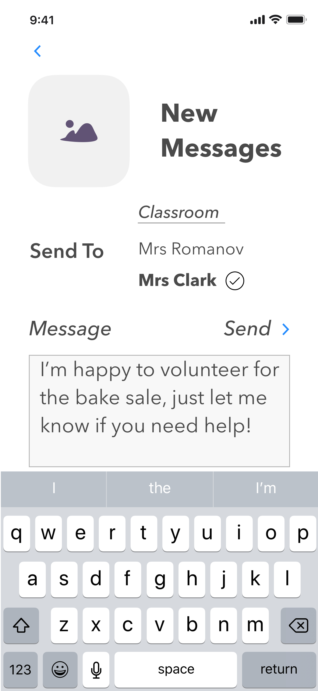

Case Study
Building Community Bonds In Public Schools
Solo Project
Duration - 1 Month
Project Overview
Problem
Communication, feeling of community and parent involvement are integral to a child's early education success.
However there currently isn't one communication app which does everything well for parent/teacher communication. Some are better with visual communication, some with text.
Challenge
Design a product for parents, that gives them what they need to be involved in their child's educational experience, without the shortcomings from other apps.
Parameters
- Created native iOS application
Deliverables
- Competitive analysis & research
- User surveys & analysis
- Creation of user personas & stories
- Design of of user flows & interfaces
- Creation of low & high fi wireframes
- Branding & logo creation
- User prototype testing
Tools Used
- Sketch
- Google suite
- Draw.IO
- Invision
Final Hi-Fi Prototypes

A communication app for school teachers and parents, helping foster stronger community bonds through parent involvement, leading to a better educational experience for children.
Market Research
What are parents using now?
Shutterfly Sites
The Good
- Big market share, tech support, name recognition
- Great when you need pictures
- App And Website Access
The Bad
- Messages don't always make it to user, or are cut off before the end

Class Dojo
The Good
- Solid brand backed by science
- Widely used and can pair with home use
- Great for text notes
The Bad
- To pair with use at home isn't free
- Isn't great if you need more than a text based message sent
Regular E-mail
The Good
- Existing product most people use
- Can send wide range of files, size permitting
- Consistent delivery
The Bad
- Nothing special or unique to market
Key Market Takeaways
Despite having the widest usage and great when pictures are needed, Shutterfly is problematic when sending text. Class Dojo is the opposite, excelling with text but not as strong for photos. E-mail is incredibly versatile, but the fact everyone uses something else for school, speaks to the desire for a market specific product.
user research
What is most important to the users?
Believe simplified communication app can be a part of building a stronger community.
Are iOS users
Information about activities
Communicate with teacher
Upload/receive/track homework
Key Survey Takeaways
To create an MVP based on user needs, the product should be iOS, allow direct parent/teacher communication, easily tell people about upcoming activities, and track homework progress
user personas
Potential users - based on research

Andrea
Stay at home mom, very involved in school
Desires
- Have all information she needs in one place
- Ability to sign up for class events online
- Track Homework
- Upload pictures, particularly of children's artwork
- Communicate directly with teachers
Frustrations
- With everything going on in their lives, too much information can feel overwhelming
- Ideally don't want messages more than once a week

Meline
Volunteer teacher, believes in community
Desires
- Continue to use communication to build up the school community
- Ability to follow what's happening in the classroom
- Native App (iOS) with info in one place
- Ability to toggle notifications on/off
Frustrations
- Doesn't want to get overwhelmed with messages throughout the week

Rochelle
Working mom relying on app for information
Desires
- Track Homework
- Simplified Interface
- Communicate with Teachers and other Parents
- Pay for class field trips/events
- Receive messages via e-mail
Frustrations
- Short on time, so make clear important information
- If it's not in the app, I don't know what's going on
user flows
creating the path users take to complete actions
Individual actions were first created, then built towards the below master view of the user narrative.
A deeper dive to all the user flows is linked below.
low-fi wireframes
Knowing the functions needed to create an create an MVP users asked for, we set off to create the wireframes - first as sketches, then low fidelity digital mocks. While there were additional products such as homework tracking built out, we'll focus here in on the most needed product request - communication.
Hand Sketches - Messages
Digital Mocks
The initial conceit was in line with a traditional email inbox, with later refinements shifting towards messaging services such as Slack/Discord/iMessage in how they look and function.
Inbox
Create Message
Delete Messages
For a deeper dive into the low-fidelity fidelity wireframes, we've included the below link.
branding
Before creating high-fidelity versions, we needed to establish the branding. To feel reminiscent of an educational environment, we used yellow and green, and No.2 pencils
Given the concept was to build a "Community" that was the original name, however as the process moved along, the proverb "It takes a village to raise a child" arose, and "Village" emerged as a stronger name.
For a deeper dive into elements in the branding process, we've included the below link.
hi-fi wireframes
Putting skin on the bones
With the branding established, it's time to combine those elements with the low-fi wireframes, to create the more polished, high-fidelity mocks of the MVP pages. You will also see here the design shift towards messaging - now inline and separated by colored bubbles.


hi-fidelity testing
User Prototype Tests
To iron out any issues, two rounds of testing in Invision was done. While there were no navigation issues, there were other things that needed refinement.
Color Refinement

To simplify the color structure, the first hifi mocks initially were adjusted from red to green.
Further adjustments were later made to soften the colors even more. Dark green was used more sparingly, focusing more on complimentary lighter pink and green colors.
conclusions
This was a problem I was passionate about solving. Talking to fellow parents opened my eyes to their potential needs, I may not have thought about, like tracking homework.
What worked?
- Final Branding (photos/colors etc)
- The process - users understood navigation
What didn't work?
- Initial Color Palatte needed slimming down and refinment, then softening
- Intial name felt stale and generic
- Early logos weren't scaling right
- About pages were a little jarring in mobile
Additional things that surprised me
1. The number of people using e-mail for these functions, yet preferring to receive their messages directly in the app.
2. How bifurcated the functionalities are between different apps, where one may be great for text and bad for pictures, and where another might be the opposite.
3. The full journey iOS users experience through the sign up process, to fully understand the product. While I understand that, I think some users may want a less immersive journey, to just get into the app and go, vs having the full picture before sign up.
4. Creating a logo to scale was also a challenge, even when you strip it down to just boxes and lines.
5. Colors combinations can be challenging if you're overly tied to dominant branding colors, and don't take into account what users are accustomed to in other products, which might have softer color combinations.